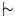

Guidelines and Policies for Entry Content
In this document, we develop guidelines and policies concerning the content of entries written for the Stanford Encyclopedia of Philosophy. Authors should not just familiarize themselves with Sections 1–4 below (and any remaining section that applies to their case), but also read our Copyright Policy. The latter makes it clear that by sending us their entry, they are agreeing to the Copyright Policy.
- Entry Substance, Style and Length
- Writing Your Entry in Word or LaTeX
- Entry Format
- Entry Revision
- The Use of Footnotes
- The Use of Special Symbols
- If You Choose to Write Your Entry in HTML (Optional)
1. Entry Substance, Style and Length
The Stanford Encyclopedia of Philosophy is intended to serve as an authoritative reference work suitable for use by professionals and students in the field of philosophy, as well as by all others interested in authoritative discussions on philosophical topics. Entries should therefore be scholarly, written with the highest of professional standards, yet strive to be of interest to as wide an audience as possible. Entries should focus on the philosophical issues and arguments rather than on sociology and individuals, particularly in discussions of topics in contemporary philosophy. In other words, entries should be “idea-driven” rather than “person-driven”. One indication that the entry is “person-driven” is that the section and subsection titles invoke the names of philosophers; this should be avoided, though the editors may make an exception if the entry is primarily historical in character. (If in doubt, check with the editors.) Non-historical, concept-based entries should therefore focus on the philosophical problems to be solved and on the extent to which distinctions, ideas, concepts, or arguments being put forward solve the problem. The internal logic of these distinctions, ideas and arguments should therefore drive the discussion, so that the reader will more frequently encounter sentences that cite philosophers without coming across as being about them.
Authors should try to structure the entry so as to organize the ideas into common themes and avoid where possible straight historical presentations of “who said what when and where”. Entries should avoid having numerous sentences of the form “X (1960, 11) argues that …”, “Y responds that … (1964, 8)”, “Z additionally requires (1970, 2) that …”, etc. Rather, the ideas and arguments should, at least much more often than not, be the focus of the sentences, with inline, parenthetical citations at the end of the sentence that document the source of the idea, argument, etc. Biographical entries should be critical (i.e., include mention and explanation of works critical of the subject's ideas) and not be hagiographical. Authors should strive to minimize the use of jargon, and introduce technical terms in plain or previously defined language. Technical entries will be expected to include definitions of the technical terms used.
The sources of all quotations should be clearly identified. In addition, authors should avoid reference to unpublished and inaccessible materials.
Entries should be objective/neutral analyses/surveys of the literature and offer a broad perspective of the topic rather than advocate a point of view. Authors should see their mission as that of introducing advanced undergraduates (or grad students and colleagues), who may have no special knowledge of the topic, to the main issues and arguments discussed in the most important pieces of primary and secondary literature on the topic, so as to bring their readers to a state where they can read that literature with insight and understanding. SEP entries should have no other agenda than to achieve this mission in a way that the balance of discussion in the entry is in proportion to, and reflects, the balance in the literature. Clarity of substance and style should also be one of the most important goals.
Encyclopedia entries should therefore not be idiosyncratic or polemical, and should avoid ‘editorializing’ value judgments in the voice of the entry. The entry should not promote the author's work, but rather strive for balance by presenting the important arguments that have been put forward on both sides of an issue. Controversial claims should be identified as such. Authors should not use the first person pronouns “I”, “me”, “my” (or “we”, “us”, or “our” -- if the entry is coauthored) and should avoid such constructions as “as I (we) have argued (elsewhere/previously/in this essay) …” or “my (our) interpretation of this passage is …”, etc. Authors should not use their SEP entry to raise and advocate for or respond and defend against objections if those objections and responses aren't already in the published literature. Authors may, however, illuminate various sides of an issue by presenting potential objections and responses as long as the entry remains neutral and/or reflects the weight of scholarly opinion.
Finally, authors should also be circumspect with respect to the number of references to their own work, though obviously, since they are experts on the topic and typically will have written widely on it, occasional references may be appropriate. The editors of the Encyclopedia will ensure that entries do not overstep the bounds of propriety in this regard.
SEP policy is that authors should not cite their own dissertations. Authors who believe that it is necessary should seek an exception beforehand. The SEP editors will then provide a list of criteria that need to be met and if the author demonstrates that those criteria are satisfied, permission may be given.
The length of entries should depend on the topic. SEP entries now average 12,000 words, but may be somewhat longer if the topic is broad and there is much literature to introduce and explain. Please contact us if the entry looks like it will grow to more than 12,000 words. We encourage authors to organize longer entries by writing a set of nested, cross-linked documents rather than by writing a single, linear document. By this we mean that overly detailed, highly technical, or highly scholarly material should be put into separate HTML (“supplementary”) documents and linked into the main entry. (See below.) In such circumstances the main (index.html) file for the entry should still provide a comprehensive overview of the entire topic. This way, the main entry should become readable by an intelligent undergraduate in a sitting of about an hour or two. More advanced readers can follow the links to the highly technical, detailed or scholarly material. Such a cross-linked set of documents will therefore be accessible to a wide audience. However, authors should create such “nested” entries only if it seems unlikely that a separate entry in the Encyclopedia will be created to discuss the supplementary material.
2. Writing Your Entry in Word or LaTeX
Assuming that authors submit a document that is within the normal range of an average SEP entry, then the author may submit either a Word (or RTF) document, or a LaTeX document. SEP document editors will convert Word and LaTeX documents to HTML. Because the Encyclopedia is being served over the World Wide Web, all entries must eventually be formatted in the HTML (HyperText Markup Language) document format for delivery over the web. This is the formatting language that controls the way text, graphics, and links are displayed in web browsers. Entries prepared using other document formats have to be converted to HTML.
Normally, the SEP will help authors convert entries prepared in Word, RTF, or LaTeX into HTML. However, authors should be aware that, unless they use LaTeX, the SEP doesn't have the resources to convert especially long entries or entries that have lengthy and detailed mathematical or logical formatting. LaTeX is the preferred format for such entries, since we now use HTML/MathJax, which allows us to embed LaTeX formatting tags within an HTML document (see MathJax Authors that use other formats for these kinds of submission may be asked to provide some assistance, either by doing the conversion themselves or by reimbursing the SEP for the extra time its document editors must spend converting and formatting the documents in HTML. (All our documents are now being prepared so that they parse as valid forms of the version of HTML known “XHTML 1.0 Transitional”. This is just HTML 4 written in an XML language.)
Please note that there are special instructions to follow for Entry Revision. See the section on Entry Revision below.
To begin writing an entry, authors should follow our instructions for downloading the sourcefile of the “Entry Template”. (These instructions were sent to you when you accepted your commission and they indicate that you can download the template by logging onto the authors' web interface, for which you have a login ID and password.) Alternatively, you may obtain the template directly from:
- Word Template (.doc)
- Word Template (.docx)
- LaTeX Template (.tex)
Once the template is downloaded, the author may simply “Open” that file in Word, or use it as the basis of a LaTeX document.
3. Entry Format
The following constitute the “canonical” sections of an SEP entry. Each section must be present, though the final Acknowledgments section is optional.
- Introduction (Definition)
- Internal Links
- Main Sections of the Entry
- Bibliography
- Academic Tools
- Other Internet Resources
- Related Entries
- Acknowledgments (optional)
These are discussed in turn.
Introduction
The Introduction should contain a brief definition of the subject. This may take one or two paragraphs, and if possible, these paragraphs should contain some statement of the subject's interest and significance. The main topics to be covered in the body of the entry may be mentioned here, so that the reader will get some idea of what is to follow.
Internal Links
The internal links should be a list of the main sections of the entry, and each item in the list should be a link to that section. The HTML commands needed to do this are included in the template and in the annotated sourcefile.
Main Sections of the Entry
The structure and sectioning of the entry is at the discretion of the author. However, SEP sections should be numbered using the following scheme:
1. Section One
2. Section Two
2.1 Subsection one of Section Two
2.2 Subsection two of Section Two
3. Section Three
3.1 Subsection one of Section Three
3.1.1 Subsubsection one of Subsection 3.1
3.1.2 Subsubsection two of Subsection 3.1
3.2 Subsection two of Section Three
Subsections and subsubsections should not be introduced unless there are at least two of them.
We encourage authors to include a Chronology or “Life” section in Biographical entries. Moreover, a “History” section is called for in the discussion of many topics.
Bibliography
SEP House Style for Bibliographies
Please use the following bibliographic format:
- Dodgson, Henrietta, 1885, “The Evidence for the Existence of Snarks”, Journal of Ornithology, 25(1): 22–44.
- Hanes, Aristo P., and Wendy Tate, 1999a, Deliverance from Evil Bandersnatches, London: Houghton & Miflin.
- ––– (ed.), 1999b, Papers on Alice, Penrith: Bilgewater Press, 2nd edition.
- Wunderman, Bill, forthcoming, “Why One Shouldn't Gimble”, Journal of the History of Technical Terminology, first online 13 March 2021. doi:10.3344/xx3ed
- Madsen, Leslie, 1924, “Slithy Toves”, in Sarah Johnson (ed.), History of Poetry, Cambridge: Cambridge University Press, pp. 302–317.
- Tate, Wendy, 2002, “Remarks on Boojums”, in William Seeg, Robert Summer, and Dana Talker (eds.), Reflections on the Foundations of Looking Glasses: Essays in Honor of Henry Dodgson (Lecture Notes in Fantasy: Volume 15), Urbana, IL: American Association of English Fantasy Enthusiasts, pp. 410–419; reprinted in Tate (ed.) 2005, pp. 43–53, but page reference is to the original.
- Tate, Wendy (ed.), 2005, The Provenance of Pure Fantasy: Essays in the Philosophy of Literature, Oxford: Clearwater Press.
- Terrell, Nicholas, 1888 [1999], “How to Gimble”, Proceedings of the Jabberwocky Society, 32: 1–10; page reference is to the reprint in Aristo Hanes & Wallace Tate (ed.) 1999b, pp. 32–42.
With this style of Bibliography, you can then cite these sources in your main text in the following ways, with placement of parentheses dependent on whether you are referring to the author, the work, or both, respectively:
- Terrell (1888 [1999, 7]) claims that snarks gimble on New England ponds in the early spring.
- It is argued in Hanes 1999a (Ch. 4) that bandersnatches can cause environmental damage.
- Some authors have claimed that snarks are extinct (Dodgson 1885, 23).
Please note that we strive to eliminate the use of dates that would mislead the reader into thinking that work is published much later. So please avoid such anachronisms as “Plato 1962”, “Locke 1950”, “Confucius 2003”, etc. Instead, in the case where publication dates are not known, please just cite the title of the work. E.g., in a sentence discussing one of Plato's dialogues, you can simply cite “(Parmenides, 132a-b)”, and then list this in the Bibliography as:
- Plato, Parmenides, in Plato: Complete Works, John Cooper and Douglas Hutchinson (eds.), Indianapolis: Hackett, 1997.
Similarly, cite sections of Locke's Essay by section number rather than by page number, so that those with other editions can find the passage you cite. So, for example, to cite Locke's Two Treatises of Government, you could refer to it as “Locke 1689” in the text (using the original year of publication), and then include the following listing in the Bibliography:
- Locke, John, 1689, Two Treatises of Government, in Peter Laslett (ed.), Locke's Two Treatises of Government, Cambridge: Cambridge University Press, 1960.
And for citing Confucius’ Analects:
- Confucius, Analects, Edward Slingerland (trans.), Indianapolis: Hackett Publishing, 2003.
Please also note: (1) The Bibliography section may be divided into subsections such as Primary Literature and Secondary Literature, or References Cited and Other Important Works, etc. and (2) The Bibliography is reserved primarily for refereed material, whether print-based or on the web.
Citations to Online Materials
Citations to online materials require special handling. If a journal article appears in an electronic journal that isn't printed, then a full URL should be identified. E.g., you would reference Alexander George's entry in the Philosopher's Imprint as follows:
- Chadha, Monima and Shaun Nichols, 2019, “Self-Conscious Emotions Without a Self”, Philosopher’s Imprint, 19(38): 1–16 [Chadha and Nichols 2019 available online].
However, sometimes an article is primarily in a print-based journal. That journal may have an online version, or the journal may not have an electronic version but instead the author has put a preprint at an archive site or on their own web page. We encourage authors to create links to online versions of refereed, published material, even if the only version online is a preprint of something that has been published. In these cases, a URL need not be identified explicitly (since the print publication information will suffice), but a specially annotated link should be included, as follows:
- Links which lead to online versions of a published paper or book at the publisher's website, should be annotated “[Available online]”. These are independent archival versions, and any changes to the articles must conform with the policies of the publisher. Note that the SEP accepts links only to material that is freely available on the web.
- Links which lead to online preprints of a published paper at an independent archive site should be annotated “[Preprint available online]”. Since the preprint site is an independent archive, the author must conform to their policies for making changes to the preprinted articles.
- Links which lead to online preprints or reprints of a published article at the author's website should be annotated “[Preprint available from the author]” or “[Reprint available from the author]”, respectively. This applies even to PDF reprints sent to the author from the publisher and hosted on the author's site, or scanned versions which the author has made of material published elsewhere. The reader should know that this is not an independent “archival” version. In cases where it is unclear whether the author's web site is serving a preprint or a reprint, the default annotation should be “[Preprint available from the author]”.
None of the above applies if the article to be cited is not published or forthcoming in a refereed journal. In such cases, if the online material is simply self-archived (possibly on a preprint site such as arXiv.org or on the author's home page), then the citation information for references to those articles should be put into the Other Internet Resources section of the entry, possibly in a special “Preprint” section.
How to Cite SEP Entries in the Bibliography
Sometimes an author will have occasion to cite another SEP entry in the Bibliography, as opposed to just listing other SEP entries in the Related Entries section. (For example, if an author quotes a passage from another SEP entry.) Proper citation of SEP entries in the Bibliography should follow our citation guidelines, which indicate that one should cite only an “archived” version of an SEP entry. To cite an SEP entry in your Bibliography, such as Sukjae Lee’s entry on Occasionalism, you would list it as follows:
- Lee, Sukjae, “Occasionalism”, The Stanford Encyclopedia of Philosophy (Fall 2020 Edition), Edward N. Zalta (ed.), URL = <https://plato.stanford.edu/archives/fall2020/entries/occasionalism/>.
Academic Tools
This section will be generated automatically by the SEP system. Authors need not add any content to this section.
Other Internet Resources
The author should cite material on the web that is of excellent value but which may not have undergone a referee process. The author serves as referee for these materials (and our subject editors will referee these choices). The items listed in this section can be segregated into subsections, such as:
Online Manuscripts
…
Websites
…
To complete this section, authors are encouraged to conduct an online search of the web for webpages and websites with high-quality, academic content on the topic in question. Such webpages and websites should be written and maintained by qualified individuals having a clear expertise on the topic. The task of finding such external websites is made considerably simpler by using one of the premier search engines which rank sites on the basis of the number of links to them on the web (i.e., these links are like web citations). Here are some useful ones:
Please do not create links to websites that are not maintained by qualified individuals. In addition, authors should not link to their own homepages or to their own list of online publications, though if you have an online publication that is relevant to your topic, it may be appropriate to include a link to it along with other online papers that are relevant to the topic. (Remember that the Bibliography section is reserved for refereed publications and so if your online paper has also been refereed and published somewhere, it should be included in the Bibliography, if cited in the body of your entry, and not in the Other Internet Resources section.) Again, our subject editors will check that self-citations are within the bounds of propriety.
Finally, the SEP prefers not to create links to websites or webpages that are behind subscription walls, since this disenfranchises those of our readers who cannot afford to pay the price of admission. So please confine the links you create here to “open access” resources.
Related Entries
Please list the names of the most important concepts and philosophers that occur in your entry. You may list keywords that do not appear as topics in our Table of Contents if you feel that they are important. We are running software which will notice the discrepancy and alert the Editor. A decision will be made whether or not to include a new entry on that topic. If we decide that the topic is too specialized or otherwise inappropriate for the Encyclopedia, we will eliminate this keyword from your list in the Related Entries section.
Acknowledgments
This section is optional. A short paragraph thanking those who contributed to the high quality of the entry is in order, however.
4. Entry Revision
Because the Encyclopedia is designed to be a dynamic reference work, authors are responsible for maintaining and periodically updating their entries. Specifically, authors are expected: (1) to update their entries regularly, especially in response to important new research on the topic of the entry, and (2) to revise their entries in a timely way in light of any valid criticism they receive, whether it comes from the subject editors on our Editorial Board, other members of the profession, or interested readers. In connection with (1), authors should update the Bibliography and the Other Internet Resources sections of their entries regularly, to keep pace with significant new publications, both in print and on the web. If important new publications affect the currency of the main text, then the main text should be altered so as to reflect the important ideas in the new research. In connection with (2), the validity of criticism shall be determined by the Editor, typically in consultation with the relevant members of the Editorial Board. The length of time required for a “timely” revision will be negotiable and will both respect the author's current commitments and reflect the seriousness of the criticism. However, entries which require revision but which are not revised within the negotiated timetable may be retired from the active portion of the Encyclopedia and left in the Encyclopedia Archives until such time as the entry is revised so as to engage the valid criticisms in question.
How to Revise Your Entry
Once an entry has been published, authors should no longer use Word or their own HTML-editor to revise the file (with two exceptions, see below). The HTML in published SEP entries has been carefully formatted so that it parses as valid at validator.w3.org. Word and other HTML-editors (with few exceptions) will damage the HTML, for they will rewrite our internationally compliant HTML with hundreds of unnecessary formatting instructions and generate an HTML file that fails to parse as HTML against international standards. Please DO NOT REVISE by downloading your entry and revising it in in Word or your own HTML editor. That will corrupt the file. Please follow the instructions below.
Making Modifications:
There is a preferred, recommended, and easy-to-use protocol for making minor changes to your entry. If you would like to add/revise a paragraph, add an item to the Bibliography, fix a typo, etc., then the proper procedure to follow is to log in to our Author Area:
https://plato.stanford.edu/cgi-bin/encyclopedia/authors.cgi
and initiate the action “Revise Entry on Server”. This will allow you to directly edit a copy of your entry on our machine (from whichever browser you are using). There is an Instructions/Help file for using this software. However, as you will see, when you use the Revise Entry function, you will be prompted to select the file you wish to edit. In most cases, you will select the main document, which is called “index.html” (some entries have multiple files, e.g., a main document “index.html” and supplementary documents). Note that when selecting the file, you have the option to:
- Edit a copy of the entry by using a Word-like (graphical) WYSIWYG (“what you see is what you get”) editor.
- Edit a copy of the HTML sourcefile directly through your browser.
If you choose the first option, to edit the file using a graphical, Word-like HTML editor:
a new browser window will open up and you will be presented with a formatted and editable copy of your entry, with menu items at the top for adding italics, bold, etc. This should be familiar to you, as the menu icons for editing the entry will be similar to those you would use in Microsoft Word.
If you choose the second option, to edit the HTML source:
a new browser window will open up and you will be presented with a page on which the file you wanted to edit is divided up into segments, each containing a “View” box and an “Edit” box. You will find the material you wish to edit in the View box, since the text in this box is rendered, or formatted, HTML. Then you edit in the corresponding Edit box, which contains the HTML sourcefile (which is plain text with markup tags). It should be clear how to add content in the Edit box.
If you choose this option, please do not cut and paste from a Word document into an editing window unless you (1) first save the Word document as a “plain text” file, and then (2) cut and paste from the plain text file. Moreover, please do not cut and paste from a Word-generated HTML file into an editing window box unless you are sure that you are not pasting corrupted HTML code. You can cut and paste in HTML code, but you should be able to see the code itself and determine that it is simple HTML and not something that looks overly complicated.
Every so often, you should SAVE your work, using the Save buttons at the left or at the top of the page. You may SAVE your work without submitting it for review, but when you believe you have completed the revisions you need to make, use the Save/Submit option, or return to the authors main menu page and use the Submit/Resubmit Privates Files to Editor function.
The above procedure will work for most major, as well as minor modifications. If you wish to make a structural change to your entry, then the editors would be happy to help you reorganize the HTML in the file. They can create new sections and rearrange others. They can get the file into a state where you can then use the Revise Entry on Server function.
Please note: If you are revising your entry, and you want to add or delete a footnote, you do not need to renumber the footnotes by hand. We have a script which will do this automatically. Please simply bring it to our attention and we renumber the notes for you.
Significant Structural Revisions or Rewriting Published Entries:
In some rare cases, where authors plan to make significant structural revisions or to rewrite their entries, they may write to us to obtain permission to update using Word or LaTeX. In that case, we will prepare a file for them to edit – we'll make sure that we generate a file in the appropriate format from the currently published entry.
In some still rarer cases, authors who can use a plain text editor to write raw HTML code can contact us and let us know that they are capable of doing so. We'll then send you a current HTML sourcefile to edit. We might ask to set up a test, to check that your plain text editor is not damaging the file.
5. The Use of Footnotes
Footnotes may be included. They can often help to shorten the main page of the entry to make it more readable. Please note, however, that they should not be used solely for citations, or even lists of citations. All citations should be included in the main text in parentheses, in the following format: (Author Year, page). Multiple citations should be separated by a semicolon.
Please note: If you are revising your entry, and you want to add or delete a footnote, you do not need to renumber the footnotes by hand. We have a script which will do this automatically. Please simply bring it to our attention and we renumber the notes for you.
6. The Use of Special Symbols
Modern web browsers can now support most Unicode characters. So most of the characters used in Word and LaTeX can be converted to similar characters in HTML. There are some exceptions, however. In general, when writing an SEP entry in Word or LaTeX, it is best to stick to well-known and widely used symbols.
If you have decided to write your entry in HTML, then as you read the final section below, note the subsection on Using Special Characters.
7. If You Choose To Write Your Entry in HTML (Optional)
We have adopted the “XHTML 1.0 Transitional” markup language as the standard for formatting Encyclopedia entries. If you choose to write your entry in HTML, you must submit a file that parses as valid XHTML 1.0 Transitional, according to the validating service at:
It is far more work for us to fix broken HTML than it is to convert Word or LaTeX documents to HTML. So, unless you are confident that you can produce HTML that is clean and internationally compliant, we recommend that you use Word or LaTeX.
For those who choose to submit an HTML sourcefile, you have two options: (a) write the document in raw HTML without the assistance of an HTML-editor, or (b) use an HTML-editor to graphically edit and format your document. In either case, you will need to download either our Tar/Gzipped Annotated Sourcefiles, or the HTML Entry Template. The Annotated Sourcefiles include “HTML comments” that explain the formatting, and include sample content that will have to be replaced by your own content. The Entry Template, by contrast, has no annotations or sample content. Once you download, unzip, and untar the Sourcefiles, or download the Entry Template file, you can open the HTML files in a plain text editor or a graphical HTML-editor and begin editing. (Note: if you want to see the annotations in the annotated sourcefiles, these will have to be opened in a plain text editor, for the HTML formatting code makes the comments invisible when rendered by graphical HTML-editing systems.)
Linking from the Main Entry to Supplementary Documents
Note that it is easy to create a link from your main entry to supplementary documents containing overly technical or scholarly material that would interfere with the presentation of the main ideas. To create a link from the main document to a supplementary document, suppose that the main document is entitled “index.html” and the supplementary document is entitled “supplement.html”. Now suppose that at the end of a paragraph, you wish place a labeled link to the supplementary document. Here is what the link might be displayed as:
... . We discuss this last point in further detail in the following supplementary document:Supplement on [Title of Supplement]
Authors using an HTML-editor will have to use the functions provided by their software to create such a link. However, authors who can edit their HTML sourcefiles directly would insert the following HTML code in order to produce this link to the supplementary document:
...in the following supplementary document.
<blockquote>
<a href="supplement.html" id="return-1">Supplement on [Title of Supplement]</a>
</blockquote>
Note that this can be done in other places in your main document, if you have more than one supplementary document. (You will have to name your supplements as “supplement1.html”, “supplement2.html”, etc.) You can find the sourcefile for the supplement template here (use the View Source function of your browser after following this link).
Using Special Characters
We allow the use of widely supported Unicode characters. We have drawn up a page of symbols, which we believe to be widely supported among current web browsers, though many do not work with older browsers and/or older operating systems (and this is noted at the top of every entry in the SEP which uses one of these special characters).
So, if you need special punctuation characters, special accented Latin characters, Greek characters, logic and/or mathematical symbols, Polish characters, etc., please visit our page:
Widely Supported XHTML/HTML4 and Unicode Characters
Note that you can use the formatting code that appears in either the 2nd or 3rd column of this table in your HTML source file.
There are various tricks one can use in HTML for formatting these symbols in the complicated ways needed by logicians and mathematicians. For example, to get a web browser to display the word “Gödel” properly, note that you will find “ö” (= “ö”) in the list of Latin Characters (in the section by that name on the webpage listed above). It indicates that you can get the browser to display the umlauted character by placing either the character entity “ö” or “ö” in your text. Thus, to produce the word “Gödel”, you place the expression “Gödel” or “Gödel” in your HTML source file.
We have set up table that shows you the HTML codes to use for more sophisticated kinds of mathematical and logical formatting. Please have a look at:
Mathematics HTML Sampler
As another example, note that the “set membership” relation ∈, the logical symbols ∀, ∃, and ≡, and the Greek symbol φ can all found in the list of symbols on our page Widely Supported XHTML/HTML4 and Unicode Characters. Now to produce the formatted line:
∃x∀y(y∈x ≡ y∈A & φ)
use the following sequence of HTML markup in your entry, where <em> … </em> is the formatting environment for italics:
∃<em>x</em>∀<em>y</em>(<em>y</em>∈<em>x</em> ≡ <em>y</em>∈<em>A</em> & φ)
In some cases, however, the symbol you will need is not widely supported in web browsers. Therefore, if you do not find the symbol you need on our page Widely Supported XHTL/HTML4 and Unicode Characters, you can check our page:
Special Symbols Not Widely Supported
For example, we have produced the following graphics for the “dproves” and the “not-dproves” signs, respectively:


These symbols can be found on the Special Symbols Not Widely Supported page and you can download them onto your machine from there. Follow the links to “dproves.jpg” and “not-dproves.jpg” in the table of special symbols. You can then save those graphics onto the drive of your local computer.
If you are using an HTML-editor to create your entry, then you simply use your software's “add image” (“add graphic”) function to place these graphics on a line in your entry. However, those authors who are editing their HTML sourcefiles directly should use the following guidelines. To produce the formatted line:
A B
place the file “dproves.jpg” into the directory containing your HTML entry and use the following HTML code in your entry:
<em>A</em> <img src="dproves.jpg" alt="dproves" /> <img src="dproves.jpg" alt="dproves" /> <em>B</em>
Note that you will not need to transfer the graphics to the same directory on plato.stanford.edu when you transfer your entry to us — the first time you view your file on our server after uploading it, our software will recognize the links to our graphics and it will automatically install copies of the needed graphic files into your upload directory.
You may use any graphic found in our symbols page in this way. If you need a symbol not found on that page, write to the editor—symbols are easily constructed.
Formatting the Related Entries Section in HTML
If you would like to create the links to related entries yourself, then here is how you proceed. (This only works for published entries, since you won't be able to discover the canonical directory (folder) names for projected but unpublished entries.) Say you are writing an entry on Frege and you wish to create a link to the entry on Davidson in the Related Entries section. The line in the HTML sourcefile which does this will look like this:
<a href="../davidson/">Davidson, Donald</a>
The part of the code which creates the link is the bit:
<a href="...">...</a>
You fill in the first ellipsis with the location of the file you want to link to, and you fill in the second ellipsis with the label on the link you want a web browser to display. In the example, the location of the entry on Davidson is “../davidson/”. (The string “davidson” here is the canonical name of the directory containing the entry on Davidson.) This is server code which tells the browser to request the default file in the directory “davidson” which appears in the parent directory (“../”) of the current directory. In our example, since we are writing on Frege, we assume that the current directory contains the entry on Frege and so if the browser goes to the parent directory (which is the “entries” directory containing all the entries) and then down to the “davidson” directory, it will find the default file.
Now you can find out the canonical name of the directory containing the entry on Davidson by visiting the entry on Davidson in the Encyclopedia. When you reach it, you will see that the URL is:
https://plato.stanford.edu/entries/davidson/
The last field of this string is “davidson”, and that is the canonical name of the directory containing the entry on Davidson.
Formatting Footnotes in HTML
SEP entries are formatted so that the footnotes are placed into a separate HTML file called “notes.html” and linked into the text. The file notes.html is placed into the same directory on plato.stanford.edu as the entry. If you are using an HTML-editor to create your entry, then you will need to use the functions provided by the editing software in order to create footnotes as links to a footnote file.
However, for those authors who are editing their HTML directly in order to create links from the text to the footnotes, here are some guidelines to follow. Suppose you want to add footnote number x at a point in the text:
...some text.[x]
To produce this in your HTML sourcefile, use the following HTML code at the point in the text where the footnote should occur:
...some text.<sup>[<a href="notes.html#note-x" id="ref-x">x</a>]</sup>
This will place “[x]” as a superscript in the text, with “x” a link to the place in the notes.html file identified as id="note-x" (see below). The id="ref-x" marks the spot in the current file to which a “Return” link from the notes.html file will return (again, see below). Then, create another HTML file named “notes.html” and in that file you will try to produce something that looks like this:
x. Body of the footnote goes here.…
To produce this line in the notes.html file, you would add the following HTML code:
<div id="note-x">
<p>
<a href="index.html#ref-x">x.</a> Body of the footnote goes here.…</p>
</div>
This will start a new paragraph and start the footnote with the symbol “x.” (“x.” will be a link back to id="note-x" in the main index.html file; the id="note-x" identifies the place in the notes.html file to which the footnote in the main text will be linked). Note: Users of the Encyclopedia can always use the “Back” or “Return” button on their browsers to get back to the text.